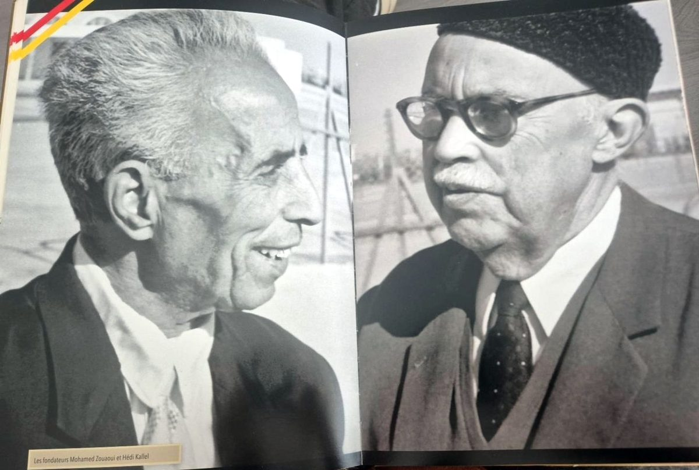
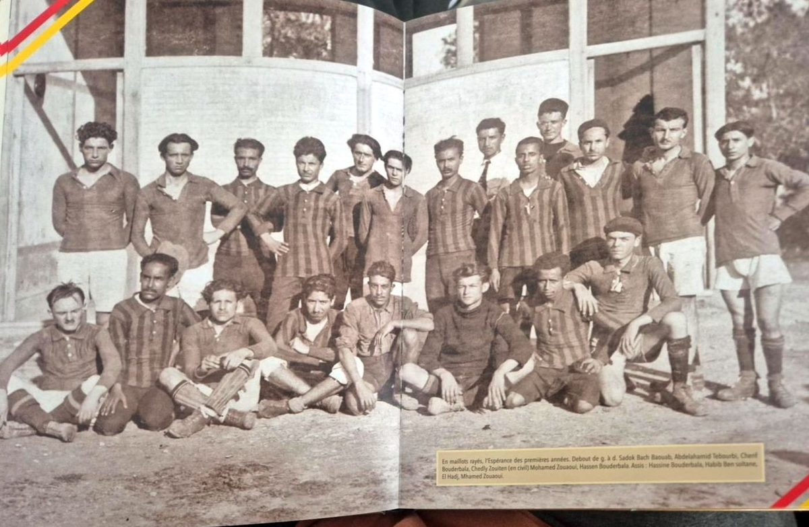
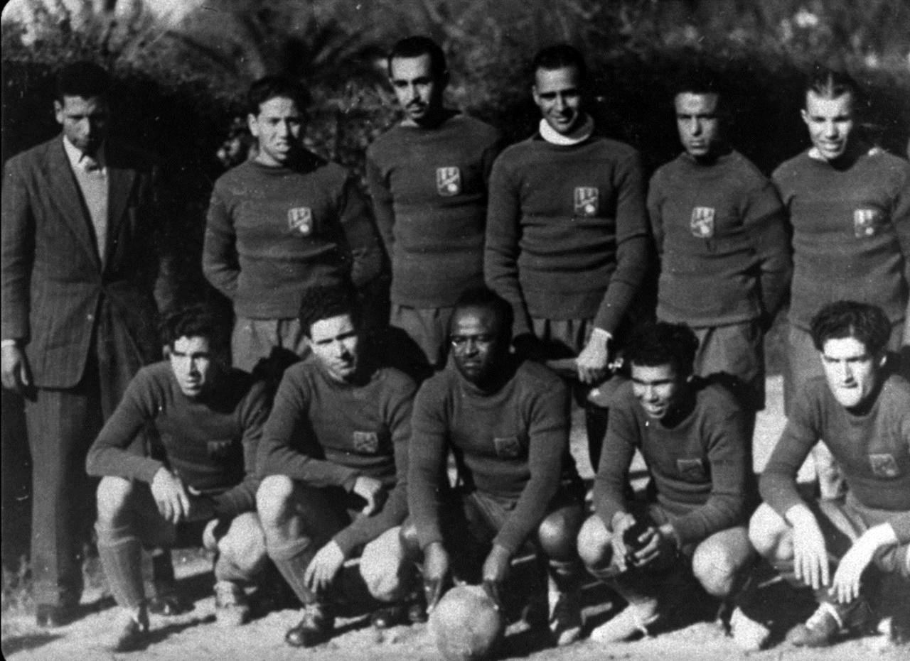
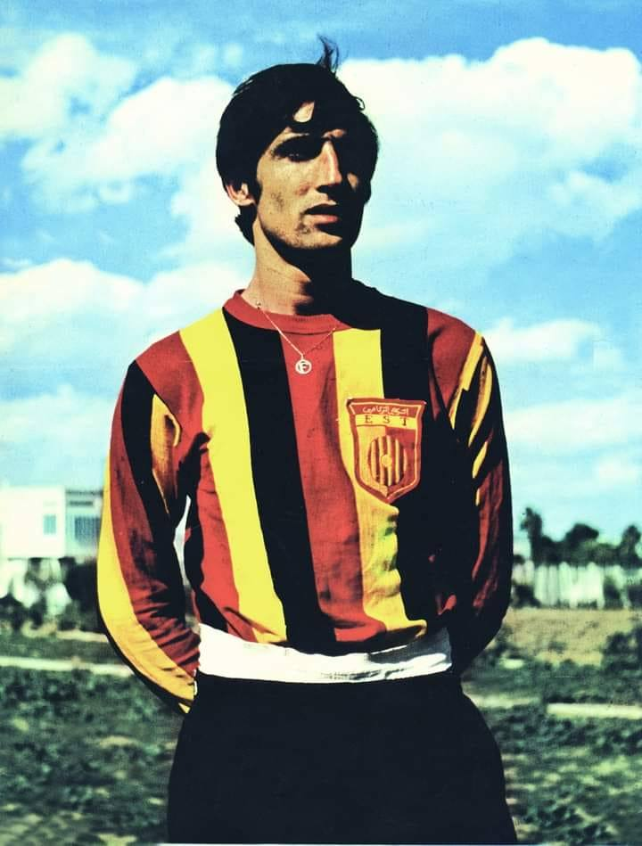
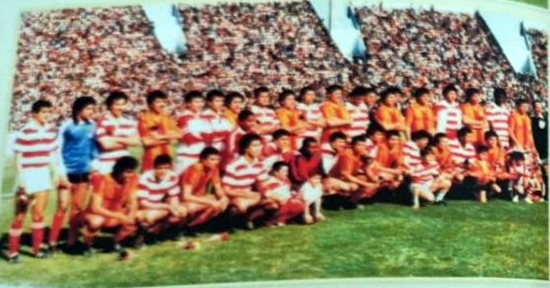
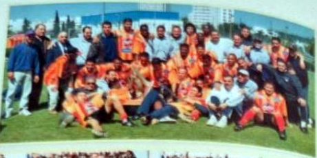
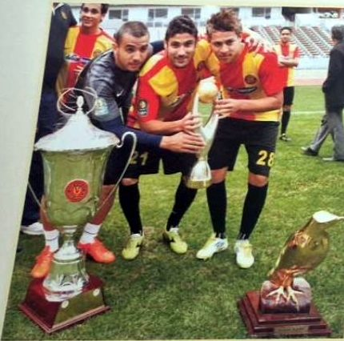
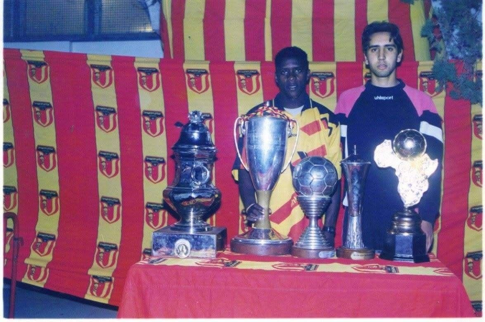

الثقة في الوثيقة
L'histoire ne se décrète pas. Elle se prouve.
L'Espérance Sportive de Tunis depuis 1919 : les fables confrontées aux archives, et toutes les données du football tunisien et africain.
1947 · L'Espérance en 1947, avec Larbi Soudani, Laroussi Tsouri et Moncef Zouhir
Club Africain – Espérance22 novembre
Le 207e derby · Bilan : 87 victoires de l'Espérance, 67 nuls, 52 du CA
I. Vérités
Ce qu'on raconte… et ce que disent les archives
 FauxL'autorisation signée par Djellouli est-elle un faux ?Le visa officiel de 1919 lu de près : ce qui y est réellement écrit.1 document d'archive →
FauxL'autorisation signée par Djellouli est-elle un faux ?Le visa officiel de 1919 lu de près : ce qui y est réellement écrit.1 document d'archive → FauxL'Espérance, un club « français » ?L'USFSA, les autorisations et le cadre imposé à tous les clubs sous le protectorat.7 documents d'archive →
FauxL'Espérance, un club « français » ?L'USFSA, les autorisations et le cadre imposé à tous les clubs sous le protectorat.7 documents d'archive → FauxLe CA, porte-drapeau du nationalisme ?Mouvement national et mouvement culturel : les faits, date par date.3 documents d'archive →
FauxLe CA, porte-drapeau du nationalisme ?Mouvement national et mouvement culturel : les faits, date par date.3 documents d'archive → FauxLes premières couleurs de l'Espérance n'étaient pas le vert et blanc ?Couleurs de l'Église, couleurs du club : ce que disent les photos d'époque.1 document d'archive →
FauxLes premières couleurs de l'Espérance n'étaient pas le vert et blanc ?Couleurs de l'Église, couleurs du club : ce que disent les photos d'époque.1 document d'archive →
- Dossier completPourquoi Montassier ? Toute l'histoire, de 1918 à 1920
- Dossier completQuel président a gagné le plus de titres ?
- Dossier completToutes les finales africaines de l'Espérance
- Dossier completQui a dominé le sport tunisien ? L'histoire des titres, époque par époque
- Dossier completFinale 2019 contre le Wydad : la VAR, Hawk-Eye et le TAS, le dossier complet
- Dossier completChiboub : les titres avant, pendant et après
- ContexteHamadi Ben Dhif et le nom du Club Africain
- Contre-enquêteL'Espérance et les étrangers avant l'indépendance
- Contre-enquêteÉtrangers sous le maillot clubiste
- RéponseLe bilan du derby Espérance – Club Africain
- DossierLes records africains de l'Espérance
- DossierDeux fondations, deux calendriers
Une fable, pièce par pièce
15 janvier 1919
« Sportive », à Tunis1. Ce qu'on raconte
« L'autorisation de 1919 est un faux. »
Le document dirait « Espérance Sportive de Tunis », alors qu'à sa création le club s'appelait « Espérance Sportive ».
2. Le document
Le visa officiel
Un arrêté à article unique, daté du 15 janvier 1919 et signé Taïeb Djellouli. Il suffit de le lire.
3. Lisons de près
« Espérance Sportive », à Tunis
Il est écrit, noir sur blanc : « L'Espérance Sportive », à Tunis. Le lieu, pas le nom. Nulle part « de Tunis ».
4. Verdict
Faux. Aussi simple que cela.
Une simple vérification, un regard honnête sur l'archive, suffit à balayer l'accusation.
Lire le dossier complet →II. Histoire
Un siècle en 10 chapitres

Chapitre 11919Bab Souika, 1919 : la naissance de l'Espérance
Chapitre 21920-1939le club de Bab Souika
Chapitre 31939-1955la guerre, les critériums et le premier championnat Chapitre 41956-1969l'indépendance et la fin de l'ère Zouiten
Chapitre 41956-1969l'indépendance et la fin de l'ère Zouiten
Chapitre 51970-1979l'Afrique, l'affaire de 1971 et Tarak Dhiab
Chapitre 61980-1989les années Dhiab Chapitre 71990-1999l'Afrique conquise
Chapitre 71990-1999l'Afrique conquise
Chapitre 82000-2009sept titres d'affilée et le signe indien
Chapitre 92010-2019jusqu'au centenaire- Chapitre 10Depuis 2019le deuxième siècle
الثقة في الوثيقة
La confiance est dans la preuve.
- Chaque affirmation renvoie à sa source.
- Les documents sont montrés, pas seulement cités.
- Quand deux sources divergent, on le dit.
III. Archives des supporters
Vos albums racontent aussi l'Espérance.
Photos de famille, billets, coupures de presse : les archives envoyées par les supporters rejoignent la mémoire du club, avec leur légende et leur crédit.
Partager une archive Voir les envois


IV. En chiffres
L'Espérance, aujourd'hui
V. Médiathèque
En vidéo
VI. Outils